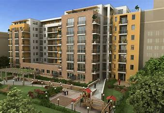

Parks in Hyderabad
Hyderabad offers several beautiful parks where visitors can relax, enjoy nature, and engage in recreational activities.
Rani Bagh
One of the oldest and most popular parks in Hyderabad, Rani Bagh features lush gardens, a zoo, and family picnic spots.
Askari Park
A well-maintained park known for its walking tracks, children's play area, and peaceful environment.
Thandi Sarak Park
Located along the famous Thandi Sarak, this park is perfect for evening strolls and enjoying the cool breeze.
Citizen's Park
A newly developed park with scenic views, fountains, and plenty of space for jogging and relaxing.